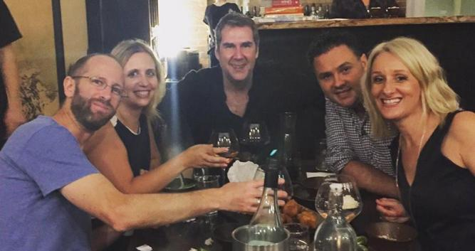
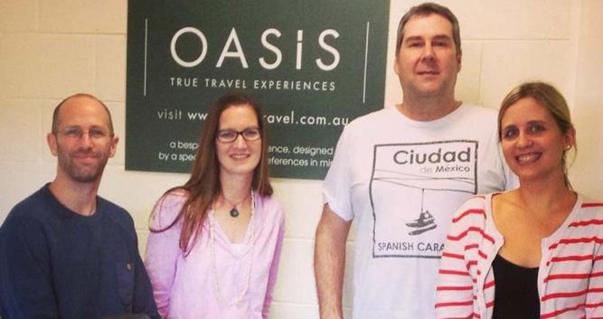

Your Specialist
Nick Page


A Bit about Nick
Nick has worked in the travel industry for over 15 years and been with Oasis since its inception in 2007. Nick has travelled extensively around Asia and parts of South America both for leisure and business. Nick studied Southeast Asian Studies with Thai Language at Chiang Mai University.
My Favourite places to visit in China are
Beijing, not matter how many times our return there is always something new to explore in this constantly evolving city. Pingyao, one of Chinas best kept secrets, staying in the ancient walled town feels like stepping back 100’s of years. Yangshuo, picturesque countryside, great food and generally much more relaxed people make for a perfect few days R&R
My favourite hotels in China are
- Beijing – Luxury – The Opposite House. Cool. Modern. Funky.
- Pingyao– Boutique – Jing’s Residence - Nestled amongst dusty curio shops and traditional noodle restaurants in the old world walled city of
- Pingyao. Shanghai – Luxury – Les Suites Orient – futuristic, minimal but has a sense of place – best views in the city!